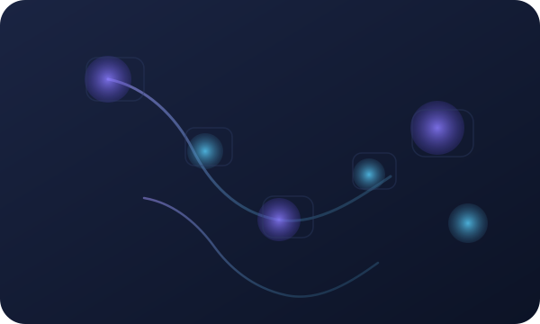
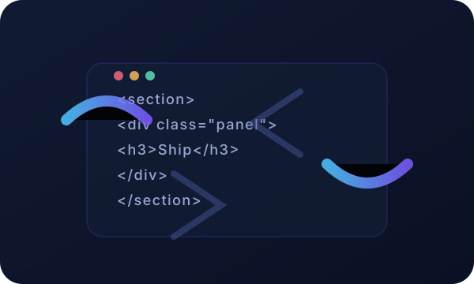

Plan
Scope clearly. Define the win, audit constraints, and choose sensible defaults.
Live, open, and always improving
This fully static portfolio doubles as an ongoing experiment. Every polish pass, micro-interaction, and accessibility upgrade ships straight to GitHub Pages.
Workflow
I keep the process pinned so you can trace each improvement as you scroll.

Scope clearly. Define the win, audit constraints, and choose sensible defaults.

Build small, test quickly, and ship tidy HTML/CSS/JS with accessible interactions.
Automate the boring bits and document what changed in each pass.
This site is the project — I iterate in the open and note what works.
A fully static site built with GitHub Pages and ChatGPT Codex. A live demo of AI-assisted coding.
Scaffolding, styling, and deploying with AI tools. The repo documents each step.
An evolving testbed for layouts, components, and micro-interactions.